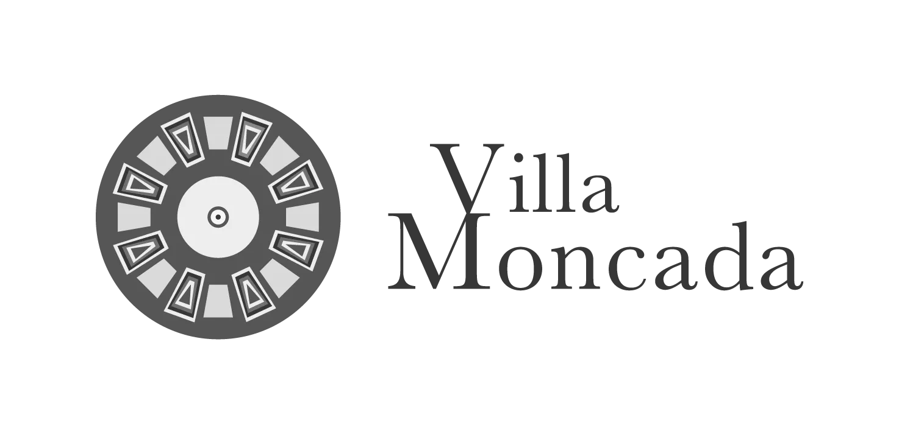
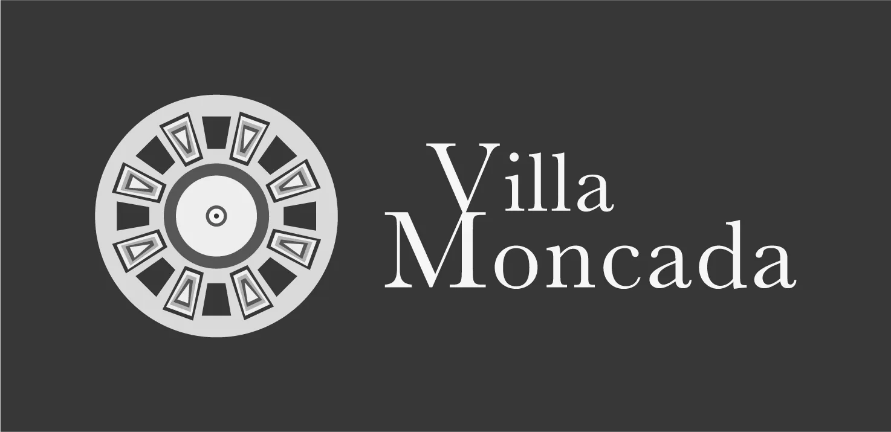

Il brief di questo lavoro accademico era quello di scegliere un luogo di cui prendersi cura, creando un evento di qualsiasi tipologia e durata. L’evento doveva essere supportato da artefatti grafici adeguati a promuoverlo e a metterlo in pratica.
Il luogo scelto è stato la Villa Moncada di Paternò, che ospita al suo interno una voliera ormai in disuso, testimonianza, a mio parere, dell’orribile pratica di recludere gli animali. La voliera sfigura un gradevole e ampio piazzale del giardino circondato da panchine.
L’obiettivo dell’evento sarebbe stato quello di rendere quel luogo più piacevole attraverso un contributo attivo della comunità. La voliera della Villa Moncada sarebbe diventata il luogo in cui “liberare i pensieri” scrivendoli su dei nastrini colorati e annodandoli alla sua grata.
Si tratta di un evento permanente che si sarebbe svolto sul lungo termine con il risultato di coinvolgere attivamente i visitatori e invitarli a trascorrere del tempo il quel luogo, per condividere i propri pensieri o leggere quelli già condivisi. Dopo qualche tempo la voliera sarebbe stata rivestita di colori e avrebbe reso quel luogo più interessante e ricco di valore.
La progettazione dell’evento è stata preceduta da uno studio preliminare sul contesto territoriale in cui è inserito il luogo scelto, che ha restituito come output una mappa di osservazione.
Tutti gli artefatti ruotano attorno alla figura del pavone che diventa la mascotte dell’evento, scelta perché un tempo la voliera ne rinchiudeva uno. Questo elemento iconografico ha l’intento di imprimere un’identità forte e riconoscibile all’evento, rappresentandone al contempo una sintesi visiva.
I colori che circondano il pavone sono infatti un richiamo diretto a quelli dei nastri. Il giallo e il ciano, colori primari in quadricromia, si alternano ai colori secondari rosso e verde. Il loro scopo è quello di trasmettere l’unione e l’inclusione, così da estendere l’iniziativa a tutti.
Il manifesto ha lo scopo di attirare l’attenzione e di incuriosire l’osservatore, per questo il claim, semplice e incisivo, arriva al fulcro dell’evento, senza tuttavia raccontarlo se non attraverso l’elemento iconografico. Sotto, in posizione marginale, un suggerimento su cosa fare, accompagnato dalla mappa della Villa Moncada che indica il punto da raggiungere.
Per distribuire i nastri colorati e le istruzioni su come usarli sono state progettate delle cartoline con dei tagli laterali per incastrare i nastri. Sulla bianca della cartolina la grafica richiama il manifesto per garantire continuità tra i due artefatti; la volta suggerisce come usare i nastrini.
Il progetto prevede la realizzazione di un espositore che abbia la funzione di contenere le cartoline e proteggerle dalle intemperie, fungendo da punto di approdo per il visitatore, il quale raggiungendolo capisce di aver trovato il luogo dell’evento. La grafica e i colori dell’espositore riprendono gli altri artefatti conferendo così coerenza all’immagine complessiva.
Cartolina: formato ISO A5. Carta: Fedrigoni Arena Eco 50, 350 g/m².
Manifesto: formato 70×100 cm.
Espositore: dimensioni 70×50×200 cm.Stampa su plexiglass.
Il marchio è ispirato al motivo geometrico che si trova nel punto cardine della Villa Moncada, al centro del quale si trova una fontana.
L'intento è stato quello di rendere riconoscibile questo luogo attraverso un segno che ne sia parte integrante.